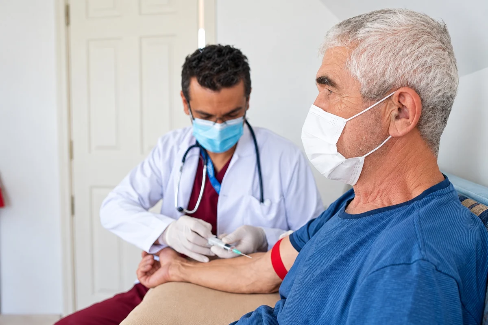
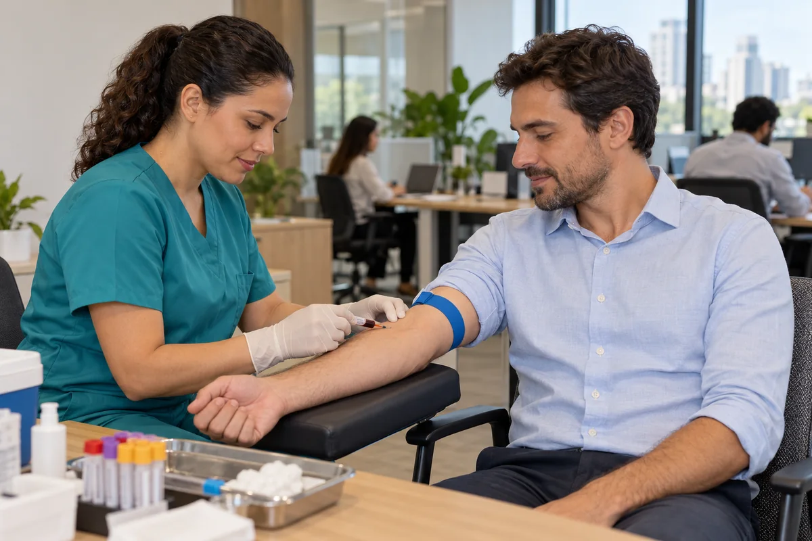

Coleta domiciliar
Realizamos a coleta no conforto da sua casa, com comodidade, segurança e atendimento humanizado, evitando deslocamentos, tornando muito melhor sua experiência e cuidado com a saúde.
Solicitar coleta domiciliarExames laboratoriais com qualidade, precisão e atendimento humanizado em Assis Chateaubriand.

O Laboratório Biolab foi inaugurado em 2021, em Toledo, pelos farmacêuticos Dr. Renato Mendes e Dra. Jhenefer Martins Ferreira Barriquello, com o propósito de oferecer análises clínicas pautadas pela qualidade, confiança, precisão e cuidado com cada paciente.
O Dr. Renato Mendes, formado em Farmácia em 2010 pela Universidade Paranaense, em Umuarama, construiu sua trajetória profissional na área laboratorial e, entre 2017 e 2019, atuou como gestor do laboratório da UNIPAR em Toledo, adquirindo importante experiência em gestão, rotina laboratorial e controle de qualidade.
A Dra. Jhenefer Martins Ferreira Barriquello, formada em Farmácia em 2020 também pela Universidade Paranaense, em Toledo, trouxe ao Biolab uma atuação voltada à qualidade técnica, ao atendimento humanizado e à busca constante pelo aperfeiçoamento dos serviços.
A união dessas experiências deu origem ao Biolab: um laboratório que combina conhecimento técnico, tecnologia, agilidade e atendimento próximo, buscando oferecer resultados confiáveis e contribuir diariamente para o cuidado com a saúde de seus pacientes.
Acesse seus resultados no portal do BioLab com os dados de acesso fornecidos pelo laboratório.
O portal de resultados será aberto em uma nova aba.
Disponibilizamos exames laboratoriais para atender às necessidades de prevenção e diagnóstico dos nossos pacientes.

Reúne exames importantes para avaliar a saúde, identificar alterações e auxiliar na prevenção de doenças.

Avalia a capacidade do organismo em digerir a lactose, açúcar presente no leite e derivados.

Avalia marcadores associados à doença celíaca e possíveis reações relacionadas ao consumo de glúten.

Analisa o DNA fetal presente no sangue materno para identificar o sexo do bebê a partir da 8ª semana de gestação.

Detecta o uso de substâncias psicoativas em um período prolongado, conforme as exigências para a CNH.

Compara o DNA dos envolvidos para determinar, com alta precisão, a existência de vínculo biológico de paternidade.

Realizamos a coleta no conforto da sua casa, com comodidade, segurança e atendimento humanizado, evitando deslocamentos, tornando muito melhor sua experiência e cuidado com a saúde.
Solicitar coleta domiciliar
Levamos a coleta até sua empresa, oferecendo praticidade, agilidade e organização para colaboradores e equipes, com atendimento no próprio ambiente de trabalho.
Solicitar coleta empresarialImagens ilustrativas. Confirme a disponibilidade e as condições diretamente com o BioLab.
Oferecer serviços de análises clínicas com qualidade, precisão e agilidade, contribuindo para diagnósticos seguros e para o cuidado com a saúde, por meio de um atendimento humano, ético e confiável.
Ser reconhecido como laboratório de referência em análises clínicas pela excelência dos serviços, confiança nos resultados, inovação e qualidade no atendimento, fortalecendo continuamente nossa relação com pacientes e profissionais da saúde.
Confira nosso endereço e horário de funcionamento.
Rua Presidente Costa e Silva, 756
Centro · Assis Chateaubriand – PR
Segunda a sexta7h15 às 17h
Sábado8h às 11h
As condições podem variar de acordo com o exame e devem ser confirmadas pela equipe.
Depende do exame. Consulte nossa equipe para confirmar o preparo correto.
Entre em contato pelo WhatsApp e nossa equipe fará o agendamento.
Sim. Envie sua carteirinha e o pedido médico pelo WhatsApp para verificarmos a cobertura.
Depende do exame e do convênio. Nossa equipe pode orientar você antes da coleta.
Sim. Realizamos coleta domiciliar com conforto e praticidade. Consulte disponibilidade e valores.
Os resultados podem ser acessados online, com segurança e praticidade, ou retirados diretamente no laboratório.